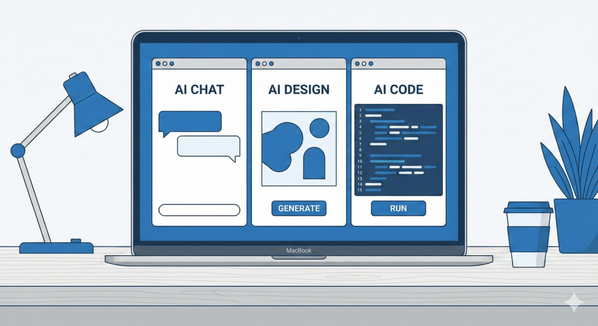
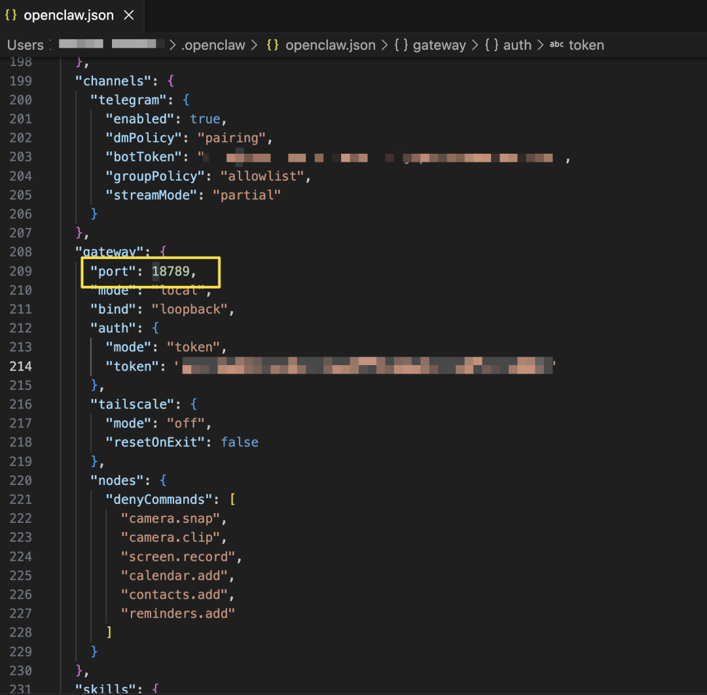
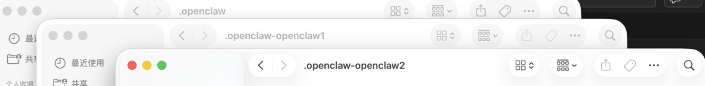

🎁 福利预告
本文最后可领取：
✅ openclaw.json 多实例配置模板（含端口设置） ✅ .zshrc 快捷命令别名（claw1/claw2） ✅ 一键部署脚本
📑 文章目录
1. 我的麻烦 2. 核心原理 3. 三步部署 4. 我的配置 5. 偷懒技巧 6. 一人公司怎么用 7. 常见问题 8. 领取福利

💣 我的麻烦
用OpenClaw半年后，我发现一个瓶颈。
工作和生活混在一起。
工作群的客户需求和周末去哪儿玩的笔记存在同一个记忆里。让AI写方案时，它偶尔会"记起"我昨晚跟老婆聊的私事。
更麻烦的是测试新功能。
想装个新skill试试，又怕搞崩正在用的配置。每次改openclaw.json都要先备份，心累。
还有副业。
我在做一个 side project，需要另一个完全隔离的环境。
其实可以开多个。
🔧 核心原理：--profile
OpenClaw支持--profile参数，用来隔离不同的实例。
路径变化：
~/.openclaw | |
~/.openclaw-<名称> |
关键：端口冲突。
默认所有实例都用18789端口。要同时运行，必须给每个实例分配不同端口。
🚀 三步部署
第一步：创建新实例
以创建openclaw1为例：
openclaw --profile openclaw1 configure按向导完成配置，建议指定独立的工作目录。
第二步：安装为系统服务
让实例在后台运行：
openclaw --profile openclaw1 gateway install第三步：修改端口（关键）
1. 改配置文件
打开~/.openclaw-openclaw1/openclaw.json：
{ "gateway": { "port": 18790 } }
2. 改服务配置文件
macOS服务配置在~/Library/LaunchAgents/ai.openclaw.openclaw1.plist
把里面的18789都改成18790。
3. 重载服务
launchctl unload ~/Library/LaunchAgents/ai.openclaw.openclaw1.plistlaunchctl load ~/Library/LaunchAgents/ai.openclaw.openclaw1.plist
📄 我的配置
~/.openclaw | |||
~/.openclaw-openclaw1 | |||
~/.openclaw-openclaw2 |

🤡 偷懒技巧：别名
在~/.zshrc里加：
alias claw='openclaw'alias claw1='openclaw --profile openclaw1'alias claw2='openclaw --profile openclaw2'
以后直接：
claw1 status—— 查看openclaw1状态 claw2 gateway restart—— 重启openclaw2
💼 一人公司怎么用
场景：多业务并行
- 客服号
—— 绑定业务A的Telegram Bot，配置产品知识库 - 运营号
—— 绑定业务B的Bot，负责内容创作 - 学习号
—— 个人学习用，和业务收入数据隔离
好处：
每个业务的客户数据独立 可以7×24小时同时在线 一个崩了不影响其他
注意：每个Telegram Bot Token只能给一个实例用。
当然一人公司有很多其他玩法，我们下期讨论
❓ 常见问题
Q：内存占用大吗？
A：每个实例是独立的Node.js进程，200-400MB左右。MacBook Pro开3个没问题。
Q：日志怎么看？
tail -f ~/.openclaw-openclaw1/logs/gateway.logQ：端口冲突怎么排查？
lsof -i :18789,18790,18791一句话总结
--profile参数让一台电脑能跑多个独立的OpenClaw实例。
只要分配不同端口，它们就能和平共处，互不干扰。
如果你有工作、生活、副业多个场景要管理，建议试试这个方法。
至少，不用再频繁切换账号了。
🎁 领取福利
感谢阅读！扫码关注公众号，回复"资料"获取：
✅ openclaw.json 多实例配置模板（含端口设置） ✅ .zshrc 快捷命令别名（claw1/claw2 一键管理） ✅ 一键部署脚本（自动修改端口、安装服务）